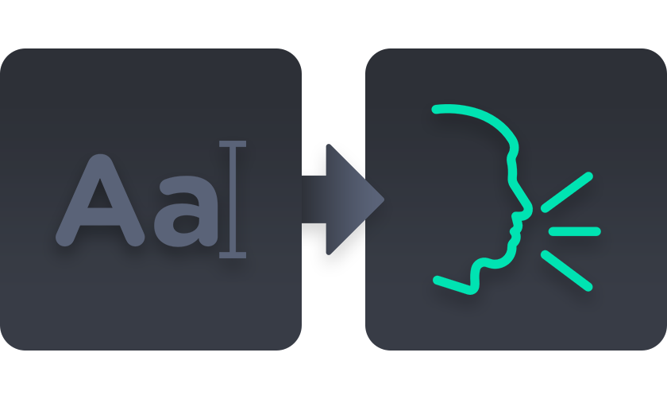
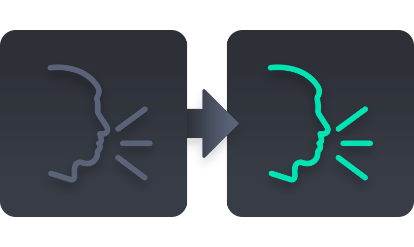

인공지능 디지털 휴먼 캐스팅
내 콘텐츠를 위한
디지털 연기자를
디지털 성우를
디지털 교육자를
섭외하고 감독하세요.
Easily create and cast characters for your content using artificial intelligence technology. You no longer need filming equipment and booking a recording studio.
스티치 스튜디오만의 AI 디지털 전환 기술을 통해, 내 콘텐츠에 출연할 인물을 직접 캐스팅하고 자유로운 연출을 지시할 수 있습니다.
스티치 스튜디오의 캐스팅
웹 기반 녹음 · 촬영 스튜디오
웹사이트 안에서 간편하게 콘텐츠 제작에 필요한 인물을 섭외하고 음성, 모습 등을 연출할 수 있습니다.
스티치 스튜디오의 캐스팅
웹 기반 녹음 · 촬영 스튜디오
웹사이트 안에서 간편하게 콘텐츠 제작에 필요한 인물을 섭외하고 음성, 모습 등을 연출할 수 있습니다.
연출 지시
제한 없는 인물 연출 형태
그 어떤 콘텐츠 성격이라도 인물 등장이 가능한 연출 방식의 AI 기능들이 구현되어 있습니다.
음성 AI 모듈
-

텍스트 입력
 에셋 음성
에셋 음성
음성 생성
Text to Speech AI
online
-

사용자 음성
에셋 음성
음성 전환
Singing Voice Conversion
online

모습 AI 모듈
-
텍스트 입력
에셋 음성
음성 생성
Text to Speech AI
online
-
사용자 음성
에셋 음성
음성 전환
Singing Voice Conversion
새로운 캐스팅 방식
서비스 개발 로드맵
-
2021 Establishment of Raon Data Corporation 라온데이터 법인 설립
-
2nd Place in World Fake News Detection Competition 가짜뉴스 탐지 경진대회 세계 2위
-
1st Place in Artificial Intelligence Championship 인공지능 챔피언십 2021 우승 (중소벤처기업부 장관상)
-
3rd Place in Big-Star Problem Solver-Platform Playoff 대-스타 해결사 플랫폼 왕중왕전 장려상 (중소벤처기업부 장관상)
-
2022 Selected as a Venture Company in Republic of Korea 한국 벤처기업 선정
-
Establishment of R&D Center 기업부설 연구소 설립
-
2 Patents Registerd for AI Technology 인공지능 기술 특허 2건 등록
-
1st Place in Seoul Media Lab Startup Competition 서울 미디어랩 스타트업 경진대회 최우수상
-
1st Place in ASEAN International Entrepreneurship Competition 중국 아세안 국제 창업 경진대회 최우수상
-
2023 Selected as an Best Startup Partner in Shinhan Open Innovation 7th 신한 오픈 이노베이션 7기 우수 협업 기업 선정